Graveyard & Chapel (Arcane Curiosities Vol.4)
Twelve animated graveyard and chapel props for top-down games: a tombstone, an open grave, a crypt door, a cemetery gate, a coffin, a bone pile, a dead tree with a raven, a soulfire lantern, an altar, a stone font, a bell frame and a stained-glass window. One-shot events (open, rise, toll, caw) end on the next loop.
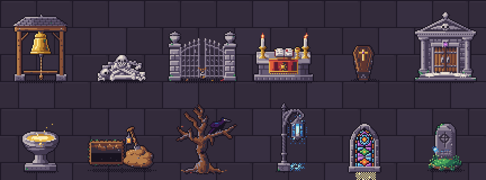
All 12 props · 33 animations
Every prop below is shown at its real frame rate. Sprites are drawn in top-down 3/4 view (key light top-left) at 32–64 px, with one 32-colour palette shared by every Arcane Curiosities volume, so props from different volumes sit together in one scene.
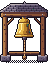
Bell Frame
Timber bell frame with a bronze bell; 'toll' swings it twice with sound rings. Chapels, villages, alarms and events.
48×64 px · 2 animations: idle (12f), toll (12f, once)Bone Pile
Heap of bones and skulls with faintly glowing eye sockets; 'rise' rattles the pile and lifts a chattering skull. Crypts, necromancer lairs, traps.
48×32 px · 2 animations: idle (12f), rise (10f, once)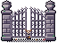
Cemetery Gate
Wrought-iron cemetery gate between urn-topped stone piers; 'open' drops the padlock and swings the gate wide. Graveyard entrances, locked areas.
64×48 px · 3 animations: closed (12f), open-idle (10f), open (10f, once)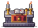
Chapel Altar
Stone altar with a gold-trimmed frontal, candles, an open tome and a chalice; 'blessing' flares gold, 'desecrated' is snuffed and violet-lit. Chapels, shrines, boss rooms.
64×48 px · 3 animations: blessing (10f, once), desecrated (12f), idle (12f)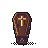
Coffin
Wooden coffin with iron handles; something knocks inside, 'open' slides the lid off onto a velvet-lined, violet-lit interior. Crypts, vampire lairs.
48×48 px · 3 animations: closed (12f), open-idle (12f), open (10f, once)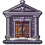
Crypt Door
Mausoleum facade with a winged-skull pediment and iron-banded doors; fog seeps out, 'open' reveals a soulfire-lit tomb. Crypt entrances, dungeon doors.
64×64 px · 3 animations: closed (12f), open-idle (12f), open (10f, once)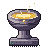
Holy Font
Carved stone font: rippling water, gold 'glow' (a healing or save point) or bubbling 'cursed' green. Chapels, save points, puzzles.
48×48 px · 3 animations: cursed (12f), glow (12f), idle (12f)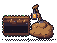
Open Grave
Freshly dug grave with a spoil heap, a planted spade and a hanging lantern; 'dig' makes the spade dig by itself. Graveyards, gravedigger quests.
64×48 px · 2 animations: dig (10f, once), idle (12f)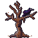
Raven Tree
Gnarled dead tree with a black raven that cocks its head and 'caw's; 'empty' is the tree alone. Graveyards, haunted woods, omens.
64×64 px · 3 animations: caw (10f, once), empty (16f), idle (16f)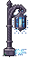
Soul Lantern
Wrought-iron crook-post lantern: blue 'soul' fire, warm 'fire' or violet 'witch' flame, with barred light on the ground. Cemetery paths, night scenes.
32×64 px · 3 animations: fire (12f), soul (12f), witch (12f)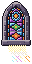
Stained Window
Gothic stained-glass lancet window (wall piece): 'day' light shaft with dust motes, moonlit 'night', shattered 'broken'. Chapels, cathedrals, manors.
32×64 px · 3 animations: broken (16f), day (16f), night (16f)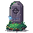
Tombstone
Mossy headstone with a ring-cross rune and a circling soul-wisp; 'cracked' leans and bleeds violet light, 'rise' bursts the grave open. Graveyards, undead encounters.
48×48 px · 3 animations: cracked (16f), idle (16f), rise (10f, once)What's in the ZIP
PNG sprite sheets with frame JSON (anchor at the feet), GIF previews, the palette (.gpl, .hex, .png), a Godot 4 project with a SpriteFrames resource and scene per prop plus a demo scene, catalog.json and SKILL.md for AI coding agents. Commercial use in your games is allowed; reselling or redistributing the art as assets is not.